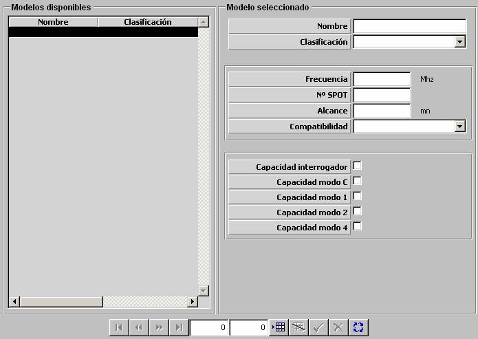

IFF

Descripción de los parámetros:
Frecuencia: Este parámetro es tenido en cuenta por el modelo de ESM para determinar si detecta emisión de este IFF.
Unidades: MHz
Rango: 0 – 99999
Nº de SPOT: Este parámetro identifica de forma única a cada IFF. Es tenido en cuenta por el modelo de ESM de modo que la detección por ESM de un IFF puede suponer la obtención del número de SPOT del IFF detectado.
Unidades: ---
Rango: 0 – 99999
Alcance: Este parámetro determina el alcance máximo del IFF.
Unidades: Millas
Rango: 0 – 999,9
Compatibilidad: Puede tomar los siguientes valores:
Este parámetro es tenido en cuenta por el modelo de IFF de modo que para que un IFF de una unidad detecte a otra unidad, ésta debe tener un equipo de IFF compatible con el de la unidad propia.
Capacidad interrogador: Determina si el IFF tiene capacidad de interrogar a otras unidades.
Capacidad modo C: Determina si el IFF tiene capacidad de operar en modo C.
Capacidad modo 1: Determina si tiene capacidad de operar en modo 1.
Capacidad modo 2: Determina si tiene capacidad de operar en modo 2.
Capacidad modo 4: Determina si tiene capacidad de operar en modo 4.